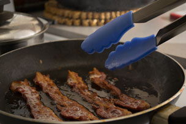
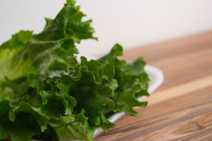
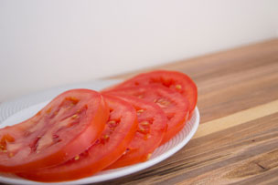

A BLT (Bacon, Lettuce, and Tomato) is a type of bacon sandwich. The BLT evolved from the tea sandwiches served before 1900 at a similar time to the club sandwich, although it is unclear when the name BLT became the norm.
The standard BLT is made up of five ingredients:
Although the ingredients of the BLT have existed for many years, there is little evidence of BLT sandwich recipes prior to 1900. In the 1903 Good Housekeeping Everyday Cook Book, a recipe for a club sandwich included bacon, lettuce, tomato, mayonnaise and a slice of turkey sandwiched between two slices of bread. Whilst the 1929 book Seven Hundred Sandwiches does include a section on bacon sandwiches, the recipes often include pickles and none contain tomato.
The BLT became popular after World War II because of the rapid expansion of supermarkets, which allowed ingredients to be available year-round. The initials, representing bacon, lettuce, tomato", likely began in the American restaurant industry as shorthand for the sandwich, but it is unclear when this transferred to the public consciousness. For example, a 1951 edition of the Saturday Evening Post makes reference to the sandwich, although it does not use its initials, describing a scene in which:
"On the tray, invariably, are a bowl of soup, a toasted sandwich of bacon, lettuce and tomato, and a chocolate milk shake."
A 1954 issue of Modern Hospital contains a meal suggestion that includes:
"Bean Soup, Toasted Bacon Lettuce and Tomato Sandwich, Pickles, Jellied Banana Salad, Cream Dressing, and Pound Cake."
By 1958, Hellmann's Mayonnaise advertised their product as traditional on bacon, lettuce, and tomato sandwiches, suggesting that the combination had been around for some time. However, there are several references to a BLT in the early 1970s, including in one review of Bruce Jay Friedman's play entitled Steambath titled: A BLT for God – hold the mayo.. The abbreviation used in title references a line of dialogue in the play in which God yells,
"Send up a bacon and lettuce and tomato sandwich, hold the mayo. You burn the toast, I'll smite you down with my terrible swift sword."
The coexistence of the shortened version and the full name suggests this was a period of transition as the abbreviation was popularized.
  Source:Wikipedia BLT Article